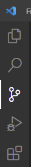
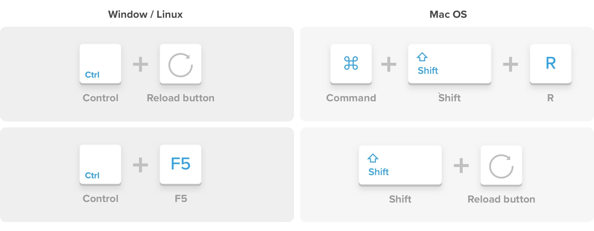

Grunnatriðin - GitHub og hýsing síðunnar
Við hýsum síðurnar okkar hjá GitHub.
Við ætlum að hýsa síðuna okkar á GitHub. Fyrir því eru nokkrar ástæður:
- Ókeypis
- Einfalt að uppfæra síðuna, beint í gegnum VS Code.
- Ef eitthvað fer úrskeiðis, skjal týnist eða eitthvað álíka, þá er alltaf hægt að sækja gamlar útgáfur á GitHub, ekkert glatast.
- GitHub er notað svo til allstaðar þar sem margir vinna saman að því að skrifa kóða, svo það er óneytanlega gagnlegt að kynnast því.
Verkefni dagsins fjallar ekki mikið um innihald síðunnar, við ætlum aðallega að koma henni á netið og æfa ferlið sem við munum nota til þess að uppfæra síðuna okkar.
Fylgið eftirfarandi skrefum:
- Búðu til Github reikning.
- Farðu á síðuna https://github.com/
- Búðu til reikning.
- Mundu að staðfesta tölvupóstfang og allt slíkt sem gæti verið beðið um.
- Gerðu möppuna klára.
- Skoðaðu möppuna þar sem þú geymir vefsíðuna þína á tölvunni.
- Það er mjög mikilægt að mappan hafi rétt nafn. nafnið skal vera "notendanafn".github.io þar sem notendanafn er þitt notendanafn. T.d. er mitt notendanafn á Github keinkunst, því þarf mín mappa að heita keinkunst.github.io.
- Sæktu git fyrir VS Code
- Opnaðu VS Code.
- Lengst til vinstri á skjánum eru fimm tákn. Þessi valmynd heitir víst Activity bar (ef þú þarft að leita).
- Smelltu á miðtáknið til að opna Source Control. 
- Nú sérðu bláan takka sem segir þér að sækja og setja upp git. Smelltu á takkan, sæktu nýjustu útgáfuna af git og settu hana upp á tölvunni þinni.
- Í uppsetningunni þarftu að velja á milli alls konar stillinga. Ekki hafa áhyggjur, þú ættir að geta ýtt á Next þar til git er upp sett, Grunnstillingarnar duga okkur hér.
- Eftir að setja upp git, skaltu velja Reaload þar sem boðið er upp á það í VS Code. Ef ekkert breytist við það gætir þú þurft að loka forritinu og opna það aftur.
- Settu upp repository
- Opnaðu síðuna þína í VS Code og farðu í source control.
- Veldu Publish to Github. Þá býrðu til svokallað Repostiory sem verður síðan þín. Gættu þess að velja að hafa það Public og að nafnið sé nákvæmlega rétt, þ.a. "notendanafnið þitt".github.io
- Nú ætti vefsíðan þín að vera komin á netið. Wefslóðin þín er þá www."notendanafnið þitt".github.io
- Uppfærðu síðuna eftir breytingar.
- Nú er allt tilbúið og það verður lítið mál að uppfæra síðuna eftir breytingar.
- Láttu fyrstu bretinguna vera að breyta textanum á síðunni á viðeigandi hátt, settu nafnið þitt inn til dæmis.
- Til að setja nýja útgáfuna á netið ferðu í Source control.
- Hér sérðu lista af öllum breytingum sem þú hefur gert.
- Fyrst þarftu skrifa viðeigandi lýsingu á breytingunum í Message. Þá er gott að skrifa eitthvað skiljanlegt eins og “Bætti við lausn á verkefni 4”. En oft er bara verið að uppfæra smáhluti. Textinn skiptir ekki máli, þetta er bara til að hjálpa til við að gefa yfirsýn yfir þróun síðunnar.
- Næst þarf að velja Commit, þetta sýnir að þú hefur staðfest að þessar breytingar eigi að senda á netið. Atugið að það að velja hvaða breytingar er verið að staðfesta kallast að Stage-a. Ef ekkert hefur verið Stage-að þá mun VS Code brjóða þér að Stage-a allt, það viltu yfirleitt alltaf gera.
- Að lokum þarf að velja Push eða Sync, sendir allar staðfestar breytingar á netið. Push er að senda, það að sækja breytingar af netinu, t.d. frá einhverjum sem vinnur með þér kallast Pull, við þurfum ekki að hugsa um það hér. En sync þýðir semsagt að gera bæið Push og Pull.
- Skoðaðu breytingarnar á netinu.
- Athugaðu að vefsíðan þín breytist ekki samstundis. Það gæti li'ið meira en mínúta þar til breytingarnar sjást á netinu.
- Vegna þessa er oftast best að uppfæra síðuna aðeins þegar þú þarft þess, kannski í lok hverrar kennslustundar. En á meðan þú ert að vinna að síðunni er best að opna hana bara á tölvunni þinni beint.
- Það getur líka verið að vafrinn sem þú notar sæki ekki nýju útgáfuna af síðunni þinni, heldur sýni þér bara gamla útgáfu sem hann geymir í svok-lluðu Cache. Þá þarftu að gera svokallað Hard Refresh. 
- Sendu mér hlekk á síðuna þína í gegnum Innu.